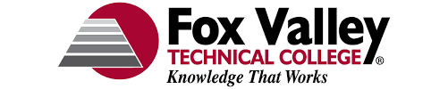
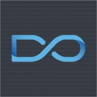

About Me
I bring a well-rounded background in software development, with experience across frontend, backend, and full-stack environments. My academic training, paired with real-world development work, has equipped me to build, maintain, and improve production-grade systems with attention to both detail and user experience.
My toolkit includes C#, .NET Core, Python, Angular, Git, and Docker—but more importantly, I bring problem-solving, adaptability, and a deep respect for code that serves real users. I’m excited to apply these skills in roles that value thoughtful, maintainable development.
Education
B.S. in Software Development (2021 – 2025)
University of Wisconsin – Oshkosh
B.S. in Software Development, 2021 – 2025
- Version control with Git
- RESTful API design in .NET Core
- Containerization & Agile workflows
At UWO, I completed a comprehensive curriculum focused on software engineering, database systems, and full-stack development. My coursework included projects in C#, Java, Python, and modern web technologies—emphasizing both object-oriented programming and secure coding practices.
A.S. in Software Development (2017 – 2019)

Fox Valley Technical College - Appleton, WI
A.S. in Software Development, 2017-2019
At FVTC, I developed core programming skills through hands-on courses in mobile development, database design, and web application architecture. I built a mobile app using Xamarin to track Planetside 2 statistics, integrating live data feeds and cross-platform UI design. In database courses, I worked extensively with both SQL Server and MySQL, applying normalization principles and writing stored procedures for backend operations. I was introduced to ASP.NET through a curriculum project modeling a school registry system, which included entity relationships, authentication flows, and form handling. I also spent time experimenting in the campus Makerspace, gaining experience with 3D printers and basic rapid prototyping—reinforcing my interest in blending physical and digital systems.
Work Experience
Junior Software Developer (Part-Time, Remote)
Backend Developer – Testing Focus
Jan 2021 – May 2022
Responsibilities
- Wrote and maintained unit tests for .NET API backend components.
- Collaborated with senior developers to refine testing strategy.
- Used Git for version control and managed code coverage metrics.
Achievements
- Improved backend code coverage by 8% (~700–800 lines).
- Strengthened test reliability in production-grade systems.
At Applied Systems, I contributed to the backend API team by writing and maintaining unit tests for a newly introduced component model. My primary focus was improving test coverage, and I successfully increased the code coverage by 8%, reaching a total of 88%—a significant improvement on a production-scale codebase. This involved authoring, refactoring, and validating approximately 700–800 lines of test code to ensure robustness and reliability in core system components. The role required consistent communication with senior developers and adherence to internal testing standards in a distributed team environment.
Tech Stack
Software Engineer Intern (Summer 2024)
Application Developer
June 2023 – May 2025
Responsibilities
- Enhanced internal REST API endpoints in .NET Core.
- Built Angular 7 dashboards for client analytics.
- Maintained version control workflows using GitKraken.
Achievements
- Reduced page-load time by 30% through lazy-loading modules.
- Automated nightly integration tests with a custom Node.js script.
At the University of Wisconsin Oshkosh, I worked within the IT Department on internal tools and student-facing systems, contributing across the full development stack. I played a key role in the RoStar Housing project, where I helped design and implement backend APIs using service-oriented architecture principles, incorporating secure access patterns and test-driven development. I collaborated with other student developers and university staff to containerize parts of the system using Docker and streamline deployment pipelines. My responsibilities also included debugging legacy code, extending models, and ensuring compatibility between Entity Framework data structures and frontend state management. The position demanded strong communication, version control proficiency with Git, and the ability to balance technical decisions with user-centered design priorities.
Tech Stack

Frontend Developer
Client-Facing Web Development
August 2022 – May 2023
Responsibilities
- Maintained and updated Angular 7 sites for small business clients.
- Resolved legacy CSS/JS issues for storefront portals and menus.
- Used GitKraken for source control and deployment coordination.
Achievements
- Reduced churn rate for client support tickets by fixing high-priority UX bugs.
- Extended shelf life of multiple Angular 7 apps through modular patching.
At Plain Ol Dev Ops, I was responsible for maintaining and enhancing frontend interfaces for a range of local businesses, including retail shops and restaurants. I worked primarily with legacy Angular 7 applications, updating components, fixing UI/UX bugs, and ensuring compatibility across browsers. My workflow involved frequent use of GitKraken for version control and collaboration across branches. This role emphasized client communication, iterative development, and careful documentation, as many projects involved sustaining long-term, small-business-facing systems with minimal downtime.